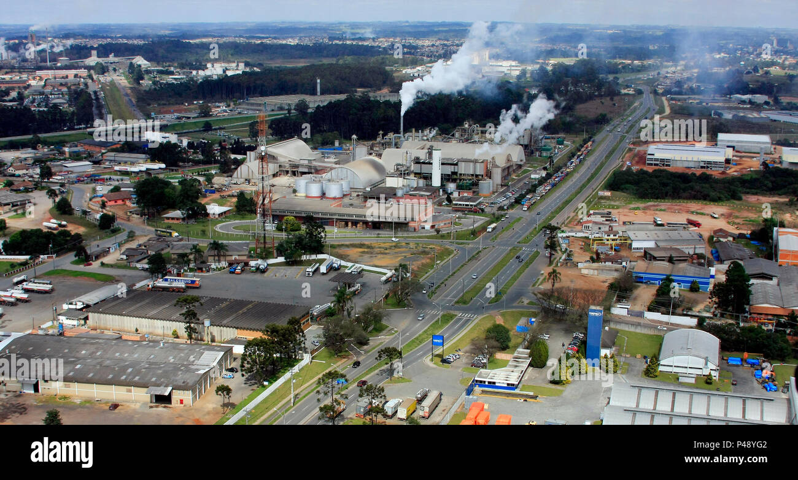

Eu me chamo Alanys e vou falar um pouquinho sobre minha cidade que se chama ARAUCARIA; comesando pelos trabalhos as condiçoẽs de trabalho são muito boas tem muitas vagas disponiveis:
A segunda coisa mais legal é que tem lugares pra passear que são lindos;um dos meus lugares preferidos é o park cachoeira ele é muito lindo tem cachoeira; e tambem tem espaços para churrascos e para cianças brincarem.
A 3 parte é que tem muitas praças de alimentação tem todo o tipo de comidas, tem comida mechicana ,indigena ,alemanha de todo o mundo.
A 4 parte é que vc acha muito amigos as pessoas são muitu unidas ,sempre ajuda um ao outro, o encino é muito bom as crianças amam ir pra escola ,as pessoas são educadas.
Tem varios coisas boas nessa cidade , eu não queria vim embora porque lá é muito bom mais tem muita gente que não valorisa a cidade po isso que falanm muito mal da cidade de ARAUCARIA sinto miuta falta de la eu deixei pra traz amigos,parentes,visinhos e até conhecidos quetratavanos com muito amor não é que eu não gosto da nova cidade, eu nem me acostumei ainda nem sei a honde ficas os mercados ou até as lojas 